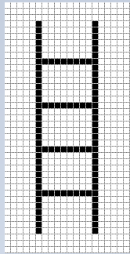
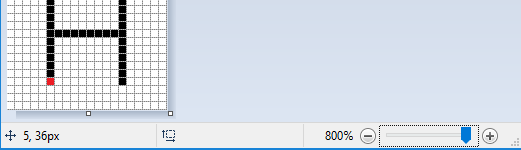

Crtanje zadatih crteža¶
Kao što smo već rekli, slike koje možemo da generišemo u PyGame okruženju pomoću funkcija za crtanje sastoje se od piksela. To su takozvane rasterske slike ili bitmape. Videli smo da je za crtanje osnovnih oblika potrebno znati koordinate piksela koje određuju svaki takav oblik. Međutim, u realnijoj situaciji ove koordinate nisu direktno zadate i treba da ih sami odredimo.
Ukoliko želimo da programski generišemo sliku po uzoru na neku postojeću bitmapu, koordinate tačaka možemo da odredimo sa date slike. Sliku možemo da uvećamo u nekom od programa za gledanje slika, tako da svaki piksel izgleda kao kvadratić. To na primer može da izgleda ovako:
{kind=link}
Vidimo da je ova slika generisana crtanjem 4 vodoravne i 2 uspravne linije, kao i da je svih 6 linija crne boje i debljine 1. Pošto smo naučili da se koordinate x računaju sleva na desno, a y odozgo na dole, kao i da se broji od nule, brojanjem možemo da odredimo koordinate početnih i krajnjih tačaka svih šest linija.
Merdevine¶
Očitajte koordinate sa uvećane slike gore i napišite program koji crta takve merdevine.
Pomoć: brojanjem (od nule) možemo da ustanovimo da su koordinate krajeva leve uspravne linije (5, 3) i (5, 36). Na isti način treba odrediti koordinate krajnjih tačaka ostalih 5 linija.
Slika u pravoj veličini je veoma mala, široka je svega 20 a visoka 40 piksela. Brojanjem bi mogle da se odrede koordinate tačaka i za veće slike, ali bi to brojanje bilo zamorno i podložno greškama (zato smo u ovom primeru izabrali tako malu sliku). Dobra vest je da programi za gledanje i uređivanje slika po pravilu prikazuju koordinate piksela na kome se nalazi kursor miša. Koordinate kursora su obično ispisane negde u statusnoj liniji na dnu prozora u kome se program izvršava, često u donjem levom uglu.
Na primer, u proramu za crtanje Paint, kada se slika uveća 8 puta i uključi rešetka koja ističe pojedinačne piksele (grid), možemo lako da se se pozicioniramo na bilo koji piksel i da očitamo njegove koordinate. Na ovoj slici, kursor miša je bio na crvenom pikselu, koji, kao što smo već rekli, ima koordinate (5, 36).
{kind=link}
U zadacima koji slede treba da napišete program koji crta crtež što približniji datom. Crteže koje treba da nacrtate možete da vidite kada kliknete na dugme „Prikaži primer”.
Da biste lakše mogli da odredite koordinate važnih tačaka na crtežu, program koji pokrećete klikom na dugme „Prikaži primer” će osim crteža prikazati i koordinate tačke na kojoj se nalazi kursor miša. Radi lakšeg očitavanja, u svim primerima su koordinate svih bitnih tačaka zaokružene na 5 piksela (završavaju se nulom ili peticom).
Ako želite da rešite ove zadatke van veb pregledača u svom okruženju za pisanje programa, možete ovde da preuzmete slike koje treba da iscrtaju vaši programi, da ih otvorite u nekom programu za gledanje slika i u njemu očitate koordinate važnih tačaka.


Antena¶
Pre kablovske televizije televizijski signal se primao pomoću antena koje su ljudi uglavnom postavljali na krovove svojih kuća i zgrada. U ovom zadatku se crta jedna takva antena.
Kao što se vidi kada pokrenete primer, crtež se sastoji od sedam linija. Uspravna linija je debljine 4 piksela, gornje dve vodoravne su debljine 1, srednje dve debljine 2, a donje dve debljine 3. Boja pozadine je „skyblue”.
Dat je kompletan program, možete da ga isprobate i ovde.
Vaga¶
Ovaj crtež se sastoji od linije (čija je debljina 2) i tri trougla. Srednji trougao, koji predstavlja oslonac vage, popunjen je bojom, pa pri njegovom crtanju treba izostaviti parametar koji zadaje debljinu, dok za ostala dva trougla treba navesti debljinu 2.
Emotikon¶
U ovom zadatku je posao nešto složeniji. Pošto se crtež sastoji od krugova i elipsi, ne možemo potpuno tačno da direktno očitamo sve koordinate i veličine koje su nam potrebne. Ono što možemo je da za svaku elipsu očitamo \(x\) koordinate krajnje leve i krajnje desne tačke (\(X_L\) i \(X_D\)), kao i \(y\) koordinate najviše i najniže tačke (\(Y_V\) i \(Y_N\)). Nakon toga, širinu i visinu elipse možemo da izračunamo kao razlike odgovarajućih \(x\) (za širinu), odnosno \(y\) koordinata (za visinu).
Što se tiče kruga, imamo više mogućnosti:
možemo da nacrtamo krug kao elipsu upisanu u kvadrat (koristeći funkciju pg.draw.ellipse)
možemo da približno očitamo koordinate centra kruga
ako želimo da preciznije odredimo koordinate centra kruga, možemo prvo da odredimo tačke \(X_L\), \(X_D\), \(Y_V\) i \(Y_N\) kao za elipse u prvom delu objašnjenja postupka, a zatim da koordinate centra kruga izračunamo iz formula \(X_c = {{X_D + X_L} \over 2}\), \(Y_c = {{Y_V + Y_N} \over 2}\).
Kuća¶
Crtež kuće se sastoji od braon pravougaonika i crvenog trougla. Trougao možemo da nacrtamo kao mnogougao sa tri temena. Sunce je prikazano kao narandžasti krug, a trava kao zeleni pravougaonik. Potrebno je voditi računa o redosledu prikazivanja trave i sunca.
Dovoljno je da koordinate centra kruga koji predstavlja Sunce očitate približno. Za one oji žele mali matematički izazov, napominjemo da se koordinate centra mogu preciznije odrediti slično kao u prethodnom zadatku, iako najniža tačka nije vidljiva i koordinata \(Y_N\) ne može da se očita.
Ako želite da vidite kako možete da odredite koordinate centra preciznijim očitavanjem i računanjem, kliknite na dugme „Određivanje centra”.
Neka su, kao i u prethodnom zadatku, sa \(X_L\) i \(X_D\) označene \(x\) koordinate krajnje leve i krajnje desne tačke kruga koji predstavlja Sunce, a sa \(Y_V\) i \(Y_N\) \(y\) koordinate najviše i najniže tačke tog kruga.
\(X\) koordinatu centra kruga možemo da odredimo kao u prethodnom primeru, \(X_c = {{X_D + X_L} \over 2}\).
Pošto se najniža tačka kruga ne vidi, ne možemo da očitamo vrednost \(Y_N\), ali možemo da odredimo poluprečnik \(r\) koristeći \(r =X_c - X_L\) ili \(r =X_D - X_c\). Sada se \(y\) koordinata centra kruga lako dobija: \(Y_c = Y_V + r\), pa nam \(Y_N\) nije ni bilo potrebno.
Drveće¶
Potrebno je nacrtati tri potpuno jednaka drveta, tako da se svako sledeće drvo dobija pomeranjem prethodnog nadesno. Ovaj zadatak je očigledno mogao da bude zadat i samo opisom prvog drveta i zadavanjem razmaka između dva susedna drveta. Program koji crta sliku je ipak ostavljen, jer je zadavanje pomoću slike jasnije i jednostvnije.
Da bi zadatak malo više ličio na realnu situaciju (u kojoj slike nema), u ovom primeru očitavanje \(x\) koordinata je namerno onemogućeno za desnu stranu slike. Sve potrebne koordinate koje ne možete da očitate, možete da izračunate.